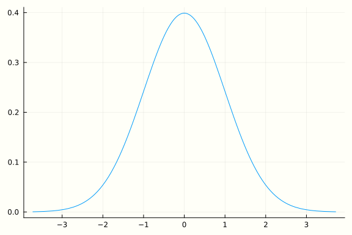
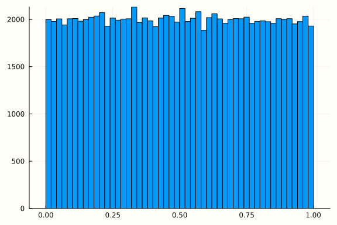
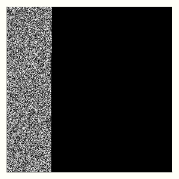

'True Random Number Generators'
Random Number Generators
It is surprising to see the number of applications large lists/streams of random numbers is used for in modern science and engineering. Even before the advent of computers tables of random numbers have been used for randomized trials in statistics [+] Many a times these numbers were generated by manually throwing dice hundreds of times or drawing cards from a shuffled deck [+]. Stanislaw Ulam mentions coming up with ideas to use random numbers for simulations of during the Manhattan Project [1]. came across their practical usefulness was when Jon Von Neumann used random number generators for monte carlo simulations on ENIAC [+].
Randomness from Nature
To generate true random numbers we can turn to nature. Physically measuring thermal noise, electron emission or even coin flips are better random number generators than algorithms. This Numberphile video talks about using the number of electrons emitted out of radioactive decay in a given time as a measure of random number. [+] Beta Decay to be precise, where an electron and an antineutrino is emitted out in the process of a neutron getting converted into a proton. [+] Like a lot of phenomena in nature it follows a normal distribution, when we expect a stream of random numbers we do not want some numbers (close to the mean of the normal distribution) to have higher frequency than other numbers (ones on the tails of the distributions), as this sequence is easier to predict with more than 0.5 probability. Using some basic probability theory we can convert a normal distribution into a uniform distribution.
Gaussian to Uniform
Now we have a way to sample from nature's normal distribution. We assume that it is a standard normal distribution, so the mean $\mu = 0$ and variance $\sigma^2 = 1$. Let $Z \sim \mathcal{N}(0, 1)$ (If we have a non-standard normal random variable $X \sim \mathcal{N}(\mu, \sigma^2)$ then $Z = \frac{X - \mu}{\sigma}$ gives us a standard normal).
We know that the Probability Density Function for normal distribution is
$$ f(x) = \frac{1}{\sqrt{2\pi}} e^{\frac{-x^2}{2}} $$
The definition of the Cummulative Density Function is
$$ F(x) = \mathbb{P}(Z \le x) = \frac{1}{\sqrt{2\pi}} \int_{0}^{x} e^{\frac{-t^2}{2}} dt $$
Consider $ \mathbb{P}(F(Z) \le x) $.
$$ \mathbb{P}(F(Z) \le x) = \mathbb{P}(Z \le F^{-1}(x)) = F(F^{-1}(x)) = x $$
We can do this in Julia as follows:
Plots.GRBackend()
using Distributions, StatsPlots
dist = Normal(0, 1)
plot(dist)

z = rand(dist, 100000)
x = cdf.(dist, z)
histogram(x, leg=false)

using Random
mutable struct MidSquareRNG <: AbstractRNG
seed::UInt64
max_len::UInt32
max_val::UInt128
lo_idx::UInt32
hi_idx::UInt32
function MidSquareRNG(seed, max_len)
max_val = parse(UInt128, lpad("", max_len, "9"))
lo_idx = convert(UInt32, floor(max_len/2))+1
hi_idx = lo_idx + max_len - 1
new(seed, max_len, max_val, lo_idx, hi_idx)
end
end
function generate(r::MidSquareRNG, size)
values = Vector{Float64}()
for i=1:size
push!(values, r.seed/r.max_val)
next_str = lpad(string(r.seed^2), 2*r.max_len, "0")
r.seed = parse(UInt64, next_str[r.lo_idx:r.hi_idx])
end
values
end
generate (generic function with 1 method)
using Plots, Colors
function visualize(r, n)
A = reshape(generate(r, n*n), n, n) #.> 0.5
plot(Gray.(A), axis=nothing)
end
r = MidSquareRNG(111112341, 10)
r = MidSquareRNG(1311111111, 10)
r = MidSquareRNG(10000112120, 10)
visualize(r, 500)

[1] Eckhardt, Roger, Stan Ulam, and Jon Von Neumann. "the Monte Carlo method." Los Alamos Science 15 (1987): 131.
[2] Randomess and Pseudorandomness, BBC In Our Time https://www.bbc.co.uk/programmes/b00x9xjb
[3]